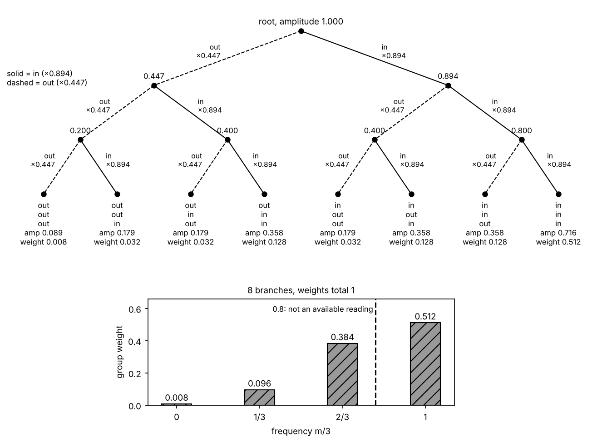
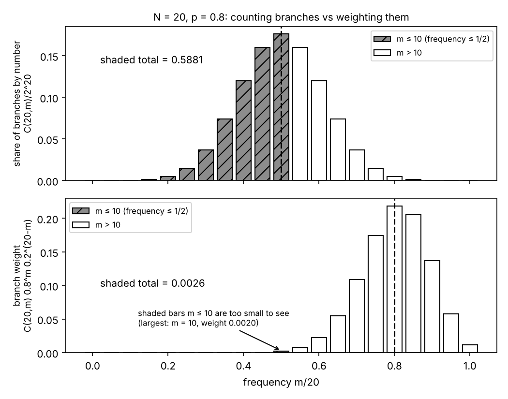

In the Hitachi experiment published in 1989, electrons reached a screen one at a time, 10 of them, then 100, 3000, 20 000 and 70 000, each making a single dot; as the stripes emerged, the share of dots inside any fixed stripe-wide region appeared to settle on a definite number. The frequency-operator argument turns that settling into a statement about the state of all $N$ electrons at once, and its algebra fits in three sentences. Split one electron's wave into the part inside a chosen region $R$ and the part outside, with lengths $|c_1|$ and $|c_0|$, so that $p = |c_1|^2$ is the share of the squared wave inside $R$ (I take $p = 0.8$ throughout as an illustration). The $N$-electron state is a list of $2^N$ amplitudes, one per string of $N$ in/out outcomes, each a product of $c$'s. The squared lengths of the entries whose frequency $m/N$ misses $p$ by more than a tolerance $\varepsilon$ add up to less than $p(1-p)/(N\varepsilon^2)$, which falls toward zero as $N$ grows. Two readings of that fact are on offer, both contested. The frequency-operator argument proper (Finkelstein 1963, Hartle 1968, Farhi, Goldstone and Gutmann 1989) is Model 2 below: in a single world, the list continued to infinitely many copies is a state on which a "frequency counter" reads exactly $p$ with certainty, so the Born rule is read off with no chance rule put in by hand beyond "a sure-bet state gives its reading for sure". Its many-worlds twin (Everett 1957, DeWitt 1970, Graham 1973) is Model 1: every string is a branch of the world, and the branches whose frequency disagrees with $|c_1|^2$ carry a total weight that shrinks toward zero, though it is never zero at any finite $N$. Model 1 comes first because Everett's derivation of the branch weight is the cleanest place to watch where the exponent 2 enters; the honest summary, argued below, is that both readings return the exponent of the length that the formalism uses to decide what is negligible. In order: the experiment; the classical pictures it kills; the three models, every step on the page, criticisms labelled (Model 3 is the Born postulate the other two try to replace); and how they relate.
The experiment: one electron at a time. An electron biprism is a fine wire held at a positive voltage between two earthed plates; an electron's wave passing on the two sides of the wire is bent inward from both sides, and beyond the wire the two parts overlap, the electron twin of Fresnel's biprism in optics. The screen is a position-sensitive single-electron detector: each arriving electron makes a flash on a fluorescent film, which is amplified, located and stored as one dot. Tonomura, Endo, Matsuda, Kawasaki and Ezawa (Hitachi, 1989) used a field-emission source so weak that roughly a thousand electrons per second arrived; at the 50 kV used the electrons move at about 0.41 of the speed of light, so successive electrons were on average roughly 120 km apart, and there was essentially never more than one electron in the apparatus at a time. Their published frames show the screen after 10, 100, 3000, 20 000 and 70 000 electrons. What is observed: (1) every detected electron registers as one dot at one place, never as a smear across several stripes and never as a part-dot in two places; (2) at 10 and 100 electrons the dots look scattered with no visible order; by 3000 stripes begin to show; at 20 000 and 70 000 the stripes are clear, with dark lanes between them where few electrons land; (3) the proportions of the pattern no longer visibly change between the 20 000 and 70 000 frames, so the share of dots inside any fixed stripe-wide region appears to settle to a definite number (an inference from the frames; the paper did not report the fraction). Merli, Missiroli and Pozzi (Bologna, 1976) saw the same build-up earlier with a biprism and an image intensifier. Bach, Pope, Liou and Batelaan (2013) did it with two real slits cut in a thin membrane and a movable mask that could cover one slit, again one electron at a time, with the same build-up; with one slit covered the two-slit stripes disappear, leaving the single-slit pattern, a wide central band with fainter side bands. The spin version that the many-worlds literature usually uses is the Stern–Gerlach sorter: an uneven magnetic field deflects an atom one way or the other according to its spin component along the field, so that silver atoms split into two bands (Gerlach and Stern, 1922); with a detector on each beam it is a two-outcome measurement, "up" or "down" in place of "in" or "out".
The two-outcome reading I use throughout: choose a region $R$ of the screen once and for all (illustration: a central band holding 80% of the pattern), and record for each electron only whether its dot is inside $R$ ("in", outcome 1) or outside ("out", outcome 0). After $N$ electrons, $m$ are in and the frequency is $m/N$. A sharper fact than (3), not measured in the Hitachi paper but measured directly in other two-outcome experiments (trapped ions read out by fluorescence, where a laser makes an ion glow if it is in one level and not if it is in the other, Itano et al. 1993; photon counting at polarizers), is that the run-to-run scatter of the frequency shrinks as $1/\sqrt N$ and disappears when the preparation is a sure bet. Idealizations used in everything below: every electron prepared identically and independently of the others; perfect detection (real detectors miss some electrons); a fixed region; an apparatus that does not drift during the run. One more deserves its own sentence, because "$N$ copies of the same state" is a phrase that can go wrong. Electrons are identical particles, and the Pauli principle forbids several of them from occupying one and the same single-electron state (spin included) at the same time, so "$N$ copies" cannot mean that. Here it does not: the electrons arrive about 120 km apart on average, their wave packets do not overlap to any degree that matters, so each can be labelled by its arrival order and treated as a separate copy; "prepared identically" means the same in/out amplitudes $c_0$ and $c_1$ for each, not the same state at the same time, and that labelling is what makes the product list of Model 1 (the tensor product) correct.
![A simulation under the squared-amplitude rule, imitating the published frames; not the Hitachi data. Left: simulated frames at N = 10, 100, 3000 and 20 000 arrivals, with the shaded band R (|x| ≤ 1.89 stripe spacings) holding exactly 80% of the pattern. Right: the running fraction of dots inside R for one simulated run of 70 000 arrivals, with 0.8 (red), the one-standard-deviation band 0.8 ± √(0.16/N) (dashed) and twice it (dotted). Notice: at 10 and 100 the dots look random, and stripes with dark lanes are clear by 3000; the running fraction wanders widely at small N and closes in on 0.8, its typical distance shrinking like √(0.16/N), but a run sits outside the one-standard-deviation band about a third of the time on average (this run more often than that beyond N = 1000); at any given large N about 95% of runs lie inside twice it, and this run is outside twice it for only about 3% of its arrivals.](figures/c-buildup-fraction.png)
Sources: Feynman, Leighton & Sands, The Feynman Lectures on Physics, Vol. III, ch. 1 "Quantum Behavior", §1-4 to §1-6 (the electron experiment, then still a thought experiment); Griffiths & Schroeter, Introduction to Quantum Mechanics, 3rd ed., §1.2 "The Statistical Interpretation"; Sakurai & Napolitano, Modern Quantum Mechanics, 3rd ed., §1.1 "The Stern–Gerlach Experiment"; Tonomura, Endo, Matsuda, Kawasaki & Ezawa, Am. J. Phys. 57, 117 (1989); Merli, Missiroli & Pozzi, Am. J. Phys. 44, 306 (1976); Bach, Pope, Liou & Batelaan, New J. Phys. 15, 033018 (2013); Gerlach & Stern, Z. Phys. 9, 349 (1922); Itano et al., Phys. Rev. A 47, 3554 (1993).
What this rules out, and what it cannot. Tiny balls, each passing on one side of the wire: the count with both sides open is the two one-side counts added, whatever the balls do at the edges, so opening the second side could never lower the count anywhere; the dark lanes of (2) kill this, because there fewer electrons land with both routes open than with one, which Bach et al. measured directly by covering one slit (the Hitachi run did not close off one side). A classical wave (the electron as a spread-out charged wave): it gives the stripes, but it spreads each electron's charge and energy across all the stripes at once and would darken the screen continuously; observation (1), a whole electron at one spot per arrival, with the electron's charge never found divided, kills it. Tickets: each electron carries a pre-set destination, in or out, assigned at the source, "in" a fraction $p$ of the time. This reproduces any frequency by construction, so counts alone cannot rule it out, and it is worth saying so plainly; what it does not do is say why $p = 0.8$ rather than anything else, or produce the dark lanes unless the tickets are coordinated with a pattern it does not contain; and for pairs of particles, Bell tests constrain pictures in which outcomes are fixed in advance locally. Ordinary probability with $p$ supplied from outside: this is the template, the law of large numbers, and it is silent on where $p$ comes from. The quantum argument below is the attempt to read $p$ off the state itself.
![The running fraction inside R against N under three accounts, one simulated run each. (i) A classical continuous wave deposits 80% of its charge inside R at every moment: a flat line, with no arrivals to count. (ii) Tickets: "in" pre-set at the source with chance 0.8. (iii) The squared-amplitude rule: each arrival in R with chance 0.8; (ii) and (iii) use different random sequences. Dashed: 0.8 ± √(0.16/N), one standard deviation; dotted: twice that. Notice: (ii) and (iii) are the same kind of staircase, both wandering outside the one-standard-deviation band (run (ii) stays just outside it from about N = 1800 on, which happens to random runs) and both staying within roughly twice it, so counts alone cannot tell tickets from amplitudes; (i) has no scatter because it has no arrivals.](figures/c-rules-out.png)
Sources: Feynman, Leighton & Sands, Vol. III, ch. 1, §1-2 to §1-5 (bullets, waves, electrons); Griffiths & Schroeter, 3rd ed., §1.2 (the realist, orthodox and agnostic positions); Bell, Physics 1, 195 (1964); Bell, Rev. Mod. Phys. 38, 447 (1966).
Model 1: every branch exists, and Everett's measure (the many-worlds reading; Everett 1957, DeWitt 1970, Graham 1973).
Intuition. Write one electron's wave as $c_1\times(\text{a unit-length wave confined to } R) + c_0\times(\text{a unit-length wave confined to outside } R)$. This split is exact: any wave is the sum of its part inside $R$ and its part outside, and the two parts are perpendicular because they occupy different places. The phases of $c_0$ and $c_1$ can be absorbed into the two unit waves, so take both real and positive: $c_1 = \sqrt{0.8} = 0.894$, $c_0 = \sqrt{0.2} = 0.447$, $c_0^2 + c_1^2 = 1$. Now $N$ electrons, prepared independently. The product rule for independent preparations (an assumption, named: no entanglement between electrons, each labelled by its arrival order as above) says the $N$-electron state is a list with one entry per string $s$ of $N$ symbols, each "in" or "out", and the entry for $s$ is the product of one $c$ per electron, $c_1$ for each "in" and $c_0$ for each "out": $c_0^{\,N-m}c_1^{\,m}$ if $s$ has $m$ in's. For $N = 2$ the list is $(0.2,\ 0.4,\ 0.4,\ 0.8)$ for the strings out-out, out-in, in-out, in-in ($0.447\times0.447$, $0.447\times0.894$, $0.894\times0.447$, $0.894\times0.894$), with squared lengths $(0.04, 0.16, 0.16, 0.64)$ adding to 1. (Physicists call this list the tensor product $\psi\otimes\psi\otimes\cdots\otimes\psi$; "list indexed by strings, entries multiplied" is all it means here.) Its weight $w(s)$ is the squared length of the entry, $w(s) = p^m(1-p)^{N-m}$ with $p = c_1^2 = 0.8$. In the many-worlds reading each detection entangles the electron with the detector and its surroundings, which record the outcome; the "in" and "out" parts are then tied to different records and can no longer be brought back together to interfere (this is what decoherence means here), and each carries on as a branch of the world. Grouping each arrival's recorded positions into "in" and "out", there are $2^N$ coarse branches after $N$ electrons, one per string, and an observer in branch $s$ has seen the frequency $m(s)/N$. (A position-sensitive detector records where the dot landed, so each arrival actually decoheres into many branches, one per distinguishable recorded position, and "in/out" groups them. How many fine-grained branches there are depends on how finely one distinguishes records and is not well defined, which matters below.) The tree for $N = 3$:
| string (electrons 1, 2, 3) | $m$ | amplitude $c_0^{\,3-m}c_1^{\,m}$ | weight $w$ (amplitude squared) | frequency $m/3$ | branches with this $m$ | group weight |
|---|---|---|---|---|---|---|
| out out out | 0 | $0.2\sqrt{0.2} = 0.089$ | $0.008$ | 0 | 1 | 0.008 |
| in out out, out in out, out out in | 1 | $0.2\sqrt{0.8} = 0.179$ | $0.032$ each | 1/3 | 3 | 0.096 |
| in in out, in out in, out in in | 2 | $0.8\sqrt{0.2} = 0.358$ | $0.128$ each | 2/3 | 3 | 0.384 |
| in in in | 3 | $0.8\sqrt{0.8} = 0.716$ | $0.512$ | 1 | 1 | 0.512 |
The eight weights total $0.008 + 0.096 + 0.384 + 0.512 = 1$. The number of strings with $m$ in's is the binomial coefficient $\binom{N}{m} = N!/(m!\,(N-m)!)$, read "$N$ choose $m$" ($\binom{3}{1} = 3$: the three strings in the second row), so the group weight at frequency $m/N$ is $w_m = \binom{N}{m}p^m(1-p)^{N-m}$. Notice that no branch has the frequency $0.8$: the available frequencies are the multiples of $1/N$, and $p$ is usually not one of them.

Everett's derivation of the weight, every step. Why should a branch's weight be the squared length of its amplitude, rather than its plain length, its fourth power, or one unit per branch? Everett asked for a weight $\mu(a)$ assigned to a branch with amplitude $a$, subject to three requirements. (R1) $\mu$ depends only on the length $|a|$ of the amplitude, not on its direction: an amplitude is an arrow in the plane (a complex number), with a length and a direction, its phase, and the direction of any one branch's amplitude can be moved into that branch's unit wave, as we did for $c_0$ and $c_1$, so nothing physical can hang on it. (R2) Additivity under regrouping: if you choose to treat a group of branches with amplitudes $a_1, \ldots, a_k$ as a single coarse branch, that coarse branch's amplitude is $a' = \sqrt{|a_1|^2 + \cdots + |a_k|^2}$, because the group's combined piece of the list is a sum of $k$ perpendicular pieces and its length follows Pythagoras; and the coarse branch must carry the group's total weight, $\mu(a') = \mu(a_1) + \cdots + \mu(a_k)$. (R3) A longer amplitude never gets a smaller weight. This is not a further assumption: weights are not negative, so adding a branch can only add weight, $g(x + y) = g(x) + g(y) \ge g(x)$ in the notation of the next sentence. (Everett's paper goes straight to the linear solution of the equation below; without non-negativity the equation also has wild, non-measurable solutions, every one of which takes negative values somewhere.) Now write the weight as a function of the squared length, $g(x) = \mu(\sqrt x)$ with $x = |a|^2$. For two branches (R2) reads $g(x + y) = g(x) + g(y)$ for all $x, y \ge 0$. Then: (1) $g(0) = g(0+0) = 2g(0)$, so $g(0) = 0$. (2) $g(2x) = g(x) + g(x) = 2g(x)$, and repeating, $g(nx) = n\,g(x)$ for every whole number $n$. (3) Put $x = y/n$ in (2): $g(y) = n\,g(y/n)$, so $g(y/n) = g(y)/n$. (4) Combine: $g\big(\tfrac{j}{n}y\big) = j\,g(y/n) = \tfrac{j}{n}g(y)$, so for every fraction $r$, $g(r) = r\,g(1)$; call $k = g(1)$. (5) For an $x$ that is not a fraction, squeeze it between fractions $r < x < r'$ as close together as you like; by (R3), $kr \le g(x) \le kr'$, so $g(x) = kx$. (6) Hence $\mu(a) = k|a|^2$, and since the weights of all the branches of a unit-length state must total 1 while their squared lengths total 1, $k = 1$: $\mu(a) = |a|^2$. Where the 2 enters: at (R2), in $a' = \sqrt{\sum|a_i|^2}$, the rule that the length of a list is the square root of the sum of its squared entries (the Hilbert-space length, the "2-norm"). If lengths were measured by $(\sum|a_i|^q)^{1/q}$ instead, the same six steps, with $x = |a|^q$, would give $\mu(a) = |a|^q$. So the derivation moves the question "why the square?" to "why does the formalism measure lengths by the square?", which is where your earlier answers come in (only the 2-norm has continuous lossless changes; Gleason). That is my reading of it, in the spirit of Squires and of Caves and Schack below. Why branch counting fails (R2): "one unit per branch" is not additive under regrouping, since merging two branches into one changes the count from 2 to 1.
The maverick branches. Everett's and DeWitt's claim is that branches whose frequency misses $p$ carry little weight. The computation is three sum rules and one inequality. Write $x_k(s) = 1$ if electron $k$ is "in" in string $s$ and $0$ otherwise, so $m(s) = x_1(s) + \cdots + x_N(s)$, and write $S[A] = \sum_s w(s)A(s)$ for the weighted total of any quantity $A$ over all strings, a plain sum, not yet a probability statement. The weight factorizes, $w(s) = \prod_k(p \text{ if } x_k = 1,\ 1-p \text{ if } x_k = 0)$, so sums over strings factorize into products over electrons. Rule 1: $S[1] = (p + 1 - p)^N = 1$ (for $N = 2$: $(0.2 + 0.8)(0.2 + 0.8) = 0.04 + 0.16 + 0.16 + 0.64$, the four strings). Rule 2: $S[x_k] = p$, because only strings with electron $k$ in contribute, electron $k$ supplies the factor $p$, and the other $N - 1$ electrons supply $(p + 1 - p)^{N-1} = 1$ (for $N = 2$, electron 1 in: $0.16 + 0.64 = 0.8$). Rule 3: $S[x_jx_k] = p^2$ for $j \ne k$ by the same argument with two electrons fixed, and $S[x_kx_k] = S[x_k] = p$ since $x_k^2 = x_k$ (for $N = 2$: $S[x_1x_2] = 0.64$). Then $S[m] = \sum_k S[x_k] = Np$, and $S[m^2] = \sum_j\sum_k S[x_jx_k] = Np + N(N-1)p^2$ ($N$ terms with $j = k$, $N(N-1)$ with $j \ne k$). So $$S\!\left[\left(\tfrac{m}{N} - p\right)^2\right] = \frac{S[m^2]}{N^2} - \frac{2p\,S[m]}{N} + p^2\,S[1] = \frac{Np + N(N-1)p^2}{N^2} - 2p^2 + p^2 = \frac{p}{N} + p^2 - \frac{p^2}{N} - p^2 = \frac{p(1-p)}{N}.$$ Check at $N = 3$, $p = 0.8$, from the table: $0.008(0 - 0.8)^2 + 0.096(\tfrac13 - 0.8)^2 + 0.384(\tfrac23 - 0.8)^2 + 0.512(1 - 0.8)^2 = 0.00512 + 0.02091 + 0.00683 + 0.02048 = 0.0533 = 0.16/3$. Now call a branch a maverick (DeWitt's word) if $|m/N - p| > \varepsilon$ for a tolerance $\varepsilon$ you choose. On every maverick, $(m/N - p)^2 > \varepsilon^2$, so $$\varepsilon^2\times(\text{total weight of mavericks}) < \sum_{\text{mavericks}} w(s)\left(\tfrac{m(s)}{N} - p\right)^2 \le \sum_{\text{all } s} w(s)\left(\tfrac{m(s)}{N} - p\right)^2 = \frac{p(1-p)}{N},$$ that is, total maverick weight $< p(1-p)/(N\varepsilon^2)$. With $p = 0.8$, $p(1-p) = 0.16$: for $\varepsilon = 0.05$ the bound is $64/N$, which is $0.064$ at $N = 1000$, $0.0064$ at $10^4$ and $0.0009$ at $70\,000$; for $\varepsilon = 0.1$ it is $16/N$. The bound is crude; the exact maverick weight is far smaller (about $7\times10^{-5}$ at $N = 1000$ for $\varepsilon = 0.05$; the figure in Model 2 plots it). Everett concluded that in the limit of infinitely many measurements the total weight of branches with non-Born frequencies goes to zero, and DeWitt (1970) drew the moral that "the mathematical formalism of the quantum theory is capable of yielding its own interpretation".
Why this model. It was built to say what chance can mean when every outcome occurs: with no outcome singled out, something must make the frequency-0.8 branches "typical", and the measure is the candidate.
Pros. The measure is forced among amplitude-functions by (R1)–(R3), and the maverick argument is a few lines of algebra with no probability postulate.
Cons (every item contested; critics and supporters named). Branch counting disagrees with branch weighting whenever $p \ne \tfrac12$. For $N = 4$ and $p = 0.8$, the coarse branches with frequency $\tfrac12$ or less number $1 + 4 + 6 = 11$ of the 16, yet their weight is $0.0016 + 0.0256 + 0.1536 = 0.181$; for $N = 20$, by number $0.588$ of the coarse branches see a frequency of $\tfrac12$ or less, while by weight those branches carry about $0.0026$, the count peaking at $m = 10$ and the weight at $m = 16$ (figure). By number, most coarse branches see a frequency near $\tfrac12$ whatever $p$ is. (If $p$ were $\tfrac12$, counting and weighting would agree, and so would every exponent; equal amplitudes hide the whole question, which is why the illustration uses $0.8$.) Which "most" is the right one is exactly what is disputed: critics (Kent 1990; Barrett 1999) say that (R2) and "depends on the amplitude only" are what one would assume if the weight were already being treated as a probability, and that whether two merged branches are one world or two is the very question at issue; supporters answer that this question has no answer, because the fine-grained branch number is not well defined (the point made above), so counting is not an option and weighting is the only measure on offer (Wallace 2012). Second, "measure tending to zero" is not "absent": the maverick branches, and the observers in them who see the wrong frequencies, exist in this reading at every $N$, and at finite $N$ nothing is zero. Third, it is not obvious why a weight should feel like a chance to anyone. Supporters of many-worlds themselves largely abandoned the frequency route for decision theory (Deutsch 1999; Wallace 2012) and for Zurek's envariance (2003), which appear in the closing table.

Sources: Feynman, Leighton & Sands, Vol. I, ch. 6 "Probability", §6-2 "Fluctuations" (the binomial weights); Wallace, The Emergent Multiverse (2012), ch. 4 "The Probability Puzzle"; Maudlin, Philosophy of Physics: Quantum Theory (2019), the chapter on many worlds; Everett, Rev. Mod. Phys. 29, 454 (1957), §5; DeWitt, Physics Today 23 (9), 30 (1970); Graham, "The measurement of relative frequency", in DeWitt & Graham (eds.), The Many-Worlds Interpretation of Quantum Mechanics (1973); Kent, Int. J. Mod. Phys. A 5, 1745 (1990); Barrett, The Quantum Mechanics of Minds and Worlds (1999).
Model 2: the frequency counter as an observable, in a single world (Finkelstein 1963, Hartle 1968, Farhi, Goldstone & Gutmann 1989). This is the frequency-operator argument proper.
Intuition. Same list, same weights, read differently: only one string becomes actual, and the question is what the $N$-electron state says, before anyone looks, about the quantity "fraction of electrons in $R$". In the formalism a measurable quantity is a matrix; its possible readings are the numbers $\lambda$ for which some list $\Psi$ is merely rescaled by it, $F\Psi = \lambda\Psi$ (its eigenvalues), and such a $\Psi$ (an eigenvector) is a sure-bet list: a state for which the reading $\lambda$ is certain. The frequency counter $F_N$ is the simplest possible matrix: it multiplies the entry for string $s$ by $m(s)/N$, a diagonal matrix with the readings on the diagonal. For $N = 2$, in the order out-out, out-in, in-out, in-in, $$F_2 = \begin{pmatrix} 0 & 0 & 0 & 0\\ 0 & \tfrac12 & 0 & 0\\ 0 & 0 & \tfrac12 & 0\\ 0 & 0 & 0 & 1\end{pmatrix},\qquad \Psi_2 = (0.2,\ 0.4,\ 0.4,\ 0.8),\qquad F_2\Psi_2 = (0,\ 0.2,\ 0.2,\ 0.8).$$ $F_2\Psi_2$ is not a multiple of $\Psi_2$, so $\Psi_2$ is not a sure-bet list: the readings $0, \tfrac12, 1$ are all "live". The sure-bet lists of $F_N$ are exactly the lists whose nonzero entries all sit at one reading, such as $(0, 0.6, 0.8, 0)$, which $F_2$ sends to $(0, 0.3, 0.4, 0) = \tfrac12\times(0, 0.6, 0.8, 0)$. Since $c_0$ and $c_1$ are both nonzero, $\Psi_N$ has nonzero entries at every reading and is not an eigenvector at any finite $N$ when $0 < p < 1$.
How far from a sure bet, and for which reading. The leftover $(F_N - \lambda)\Psi_N$, which would be the zero list for a sure-bet list with reading $\lambda$, has entries $(m(s)/N - \lambda)\times$(entry of $s$), so its squared length is $\sum_s w(s)(m(s)/N - \lambda)^2 = S[(m/N - \lambda)^2]$. Expand $(m/N - \lambda) = (m/N - p) + (p - \lambda)$: $$S\!\left[\left(\tfrac mN - \lambda\right)^2\right] = S\!\left[\left(\tfrac mN - p\right)^2\right] + 2(p - \lambda)\,S\!\left[\tfrac mN - p\right] + (p - \lambda)^2 = \frac{p(1-p)}{N} + 0 + (\lambda - p)^2,$$ using $S[m/N - p] = Np/N - p = 0$ and the result of Model 1. This is a parabola in $\lambda$ with its bottom at $\lambda = p = |c_1|^2$ and floor $p(1-p)/N$. By hand at $N = 2$: $0.04\lambda^2 + 0.32(\tfrac12 - \lambda)^2 + 0.64(1 - \lambda)^2$, which at $\lambda = 0.8$ is $0.0256 + 0.0288 + 0.0256 = 0.08 = 0.16/2$, at $\lambda = \tfrac12$ is $0.01 + 0 + 0.16 = 0.17 = 0.09 + 0.08$, and at $\lambda = 1$ is $0.04 + 0.08 + 0 = 0.12 = 0.04 + 0.08$. So at every finite $N$ the list is nearest to being a sure bet for the reading $p$, misses by a squared length $p(1-p)/N$, and the part of it on readings further than $\varepsilon$ from $p$ has squared length below $p(1-p)/(N\varepsilon^2)$, the Model 1 inequality read as lengths rather than branch weights.
The limit, and the one rule used. The only probabilistic statement the argument keeps is the certainty rule (the eigenvalue–eigenstate link): a sure-bet list gives its reading with certainty, and a list with no entry at a reading never gives it. Hartle (1968) showed that $(F_N - p)\Psi_N$ has a length tending to zero and read that as "frequency $p$ in the limit". Farhi, Goldstone and Gutmann (1989) made the limit an object. Infinitely many copies live in von Neumann's infinite-product space (1939), which is non-separable: no countable collection of lists comes close to all of them, and product lists built from two different single-copy states are perpendicular there, because the overlap per copy raised to the $N$-th power goes to zero unless that overlap is exactly 1. Numbers: two single-copy states with overlap $\cos 1° = 0.9998477$ (two polarizer settings $1°$ apart) have, after $10^5$ copies, overlap $0.9998477^{10^5} = e^{-15.2} \approx 2.4\times10^{-7}$. In that space FGG define a counter $F_\infty$ on a suitable collection of lists and prove that $\Psi_\infty = \psi\otimes\psi\otimes\cdots$ is an eigenvector of it with eigenvalue $|c_1|^2$, exactly, in the sense of limit their construction defines (the leftover's squared length $0.16/N$ tends to zero, and in the limit object there is no leftover). With the certainty rule, the frequency of "in" over the infinite run is $|c_1|^2 = 0.8$ with certainty, and no chance other than certainty (probability 1) was postulated. Ochs (1977) and Gutmann (1995) give the mathematical law-of-large-numbers versions of the same statement.
![Left: the squared length of the leftover (F_N − λ)Ψ_N, equal to (λ − 0.8)² + 0.16/N, against the reading λ for N = 1, 2, 8, 32 and 128, with an inset zoomed near the floor because the N = 32 and 128 curves overlap at full scale. Right (both axes logarithmic): the floor 0.16/N (black); the Chebyshev bounds 16/N and 64/N for ε = 0.1 and 0.05 (blue, clipped at 1); and the exact squared length of the part of Ψ_N on strings with |m/N − 0.8| > ε (red), computed for every integer N from 10 to 100 000. Notice: every parabola bottoms out at λ = 0.8, but its floor stays above zero at every finite N; the exact deviant part is jagged at small N, because only some fractions m/N fall outside the window, and falls far faster than the bound.](figures/c-parabola-floor.png)
Why this model. It is what "the frequencies come out of the formalism" means when made precise: a single rule, certainty for sure-bet lists, applied to one carefully built state.
Pros. No probability primitive beyond certainty; the exponent 2 appears from the lengths, not from a postulate; and the finite-$N$ floor $p(1-p)/N$ is the variance of the frequency, the square of the measured $1/\sqrt N$ scatter, once lengths are read as chances.
Cons (contested, with the replies). (i) The certainty rule is itself the probability-1 case of the Born rule, so the argument derives the quantitative rule from its qualitative case plus the choice of length. (ii) Squires (1990): dropping the leftover "because its length tends to zero" assumes that zero length means it does not happen, which is a statement linking length to chance, that is, a probability statement about the norm; and at any finite $N$, which is every real experiment, what is needed is "small length means rarely happens", which is the Born rule's whole content. (iii) Caves and Schack (2005), in a paper titled "Properties of the frequency operator do not imply the quantum probability postulate": to say that the finite-$N$ lists approach $\Psi_\infty$ one must choose what "close" means (a topology on the lists), and the natural choice, closeness in the Hilbert-space length, is where the rule enters; with another notion of closeness the counter's properties alone do not force $|c|^2$. (iv) The limit object lives in a non-separable space with no finite-$N$ counterpart: there, the lists for $p = 0.8$ and $p = 0.8001$ are perpendicular, perfectly distinguishable, which no finite $N$ achieves. Supporters reply that what is assumed is only certainty for eigenstates plus continuity in the norm, weaker than the full quantitative rule (the stance of Hartle's and FGG's papers), and others add that Gleason's theorem independently shows that any non-contextual probability rule, in three or more dimensions, must be $|c|^2$ once the state is granted certainty for itself, so the frequency argument shows the formalism to be consistent with exactly the long-run frequency that rule gives. The honest statement: read with the certainty rule and the 2-norm, the formalism can assign long-run frequencies to only one exponent, 2; it does not show that lengths are chances, and that step is where every derivation of the Born rule has to assume something.
Sources: Griffiths & Schroeter, 3rd ed., §3.2.2 "Determinate States" (determinate states are eigenstates) and §3.4 "Generalized Statistical Interpretation"; Sakurai & Napolitano, 3rd ed., §1.3 and §1.4 (eigenkets, measurement postulates); Finkelstein, Trans. N. Y. Acad. Sci. 25, 621 (1963); Hartle, Am. J. Phys. 36, 704 (1968); Farhi, Goldstone & Gutmann, Ann. Phys. 192, 368 (1989); von Neumann, Compos. Math. 6, 1 (1939); Ochs, J. Philos. Logic 6, 473 (1977); Gutmann, Phys. Rev. A 52, 3560 (1995); Squires, Phys. Lett. A 145, 67 (1990); Caves & Schack, Ann. Phys. 315, 123 (2005).
Model 3: the Born postulate, with Gleason behind it. The rule as physicists use it: each electron lands in $R$ with probability $p = |c_1|^2$, the share of the squared wave inside $R$, independently of the others. Ordinary probability then does everything at finite $N$. The chance of exactly $m$ in's is $w_m = \binom Nm p^m(1-p)^{N-m}$, the same numbers as the group weights above; the expected frequency is $p$; the standard deviation of the frequency is $\sqrt{p(1-p)/N}$, whose square, the variance $p(1-p)/N$, is exactly the floor of Model 2's parabola, now read as scatter; and the chance of a frequency outside $p \pm \varepsilon$ is below $p(1-p)/(N\varepsilon^2)$ (Chebyshev's inequality), now read as a probability. For $p = 0.8$ at the Hitachi frame sizes:
| $N$ | 10 | 100 | 3000 | 20 000 | 70 000 |
|---|---|---|---|---|---|
| standard deviation of the frequency, $0.4/\sqrt N$ | 0.126 | 0.040 | 0.0073 | 0.0028 | 0.0015 |
| standard deviation of the count $m$, $0.4\sqrt N$ | 1.3 | 4 | 22 | 57 | 106 |
For large $N$ about 95% of runs lie within two standard deviations of $0.8$ (the normal approximation; at $N = 10$ the distribution is too lumpy for that rule, and the only frequency within $0.05$ of $0.8$ is $0.8$ itself, $m = 8$, with chance $45\times0.8^8\times0.2^2 = 0.302$).
Why this model. One line fits every count ever made, at finite $N$, with no limit.
Pros. Minimal; finite-$N$ probabilities come free; the $1/\sqrt N$ scatter is a theorem of probability, not a new fact.
Cons. It is a postulate (Born 1926, where the first paper's text tied the chance to the amplitude and a footnote added in proof corrected it to the square), and it says nothing about why 2, except through Gleason's theorem (1957). Dividing the screen into regions is not enough for that theorem: a rule such as "the share of $|\psi|^4$ inside $R$" also depends only on the state and the region and totals 1 over every division of the screen, yet it is not the square. Gleason's conditions are stronger: chances must be additive and total 1 over every complete set of mutually exclusive outcomes the state space allows (every orthonormal basis, including measurements that are not screen regions); each outcome's chance must not depend on which complete set it is measured in (non-contextuality); and the space must have three or more dimensions (the screen has many regions, so this holds). Those conditions alone leave one thing open: the theorem then says the chances are the ones that some state, or some mixture of states, would give, without saying which. One more condition closes the gap, and it is the certainty rule of Model 2 again: the prepared state must give certainty to the outcome "the system is found in that very state", which forces the mixture to be the prepared state alone. Then the chance of $R$ must be the squared length of the part of the state inside $R$; not the plain length, not the fourth power, not any other rule. Critics note that non-contextuality is an assumption, as your earlier answers said.
![Under the Born postulate with p = 0.8. Left: the probability of each count m for N = 100, the binomial C(100,m) 0.8^m 0.2^(100−m), with the mean 80 and one standard deviation (4) marked. Right: the chance that m/N lies within 0.05 (black) and within 0.01 (red) of 0.8, for every integer N from 10 to 100 000. Notice: both curves are jagged at small N because only some fractions m/N fall in the window (within 0.01 of 0.8, no m/N does for N = 11 to 14, 16 to 19, 22 to 23, 27 to 28, 32 to 33 or 37 to 38, so that chance is 0 there); the within-0.05 curve is 1 minus the ε = 0.05 deviant squared length of the previous figure, the same numbers under a different axis label.](figures/c-born-spread.png)
Sources: Griffiths & Schroeter, 3rd ed., §1.2 "The Statistical Interpretation" and §1.3 "Probability" (standard deviation); Feynman, Leighton & Sands, Vol. I, ch. 6, §6-2 and §6-3; Sakurai & Napolitano, 3rd ed., §1.4; Born, Z. Phys. 37, 863 (1926); Gleason, J. Math. Mech. 6, 885 (1957); Busch, Phys. Rev. Lett. 91, 120403 (2003), for two-outcome systems.
How they relate. One algebra, three readings. The list of $2^N$ products, the weights $w_m$, and the identity $S[(m/N - p)^2] = p(1-p)/N$ are common to all three. Model 1 reads $w(s)$ as the weight of an existing branch; Model 2 reads it as a squared length that the certainty rule turns into a frequency only in the infinite limit; Model 3 reads it as the probability of the string $s$. Wherever they make predictions they agree, so no measurement decides among them; but Models 1 and 2 yield finite-$N$ predictions only once small weight or small length is read as "rare", which is the step in dispute, and what decides is which assumption one finds weaker. The exponent is the norm's in all three. In Everett's derivation it entered at $a' = \sqrt{\sum|a_i|^2}$; in Hartle's and FGG's at "squared length"; in Born's directly. Here is the check that the frequency argument returns whatever exponent it is handed. Measure the size of a list with exponent $q$ instead, so that the strings with $m$ in's carry $v_m = \binom Nm|c_0|^{q(N-m)}|c_1|^{qm}$. The ratio of neighbours is $v_{m+1}/v_m = \frac{N-m}{m+1}\big(|c_1|/|c_0|\big)^q$, which crosses 1 where $(N - m)r = m + 1$ with $r = (|c_1|/|c_0|)^q$, that is, at $m/N \approx r/(1+r)$: the dominant frequency is $f_q = |c_1|^q/(|c_0|^q + |c_1|^q)$. With $|c_1|/|c_0| = 2$ (our $p = 0.8$), $f_q = 2^q/(1 + 2^q)$:
| $q$ | 1 | 2 | 3 | 4 |
|---|---|---|---|---|
| dominant frequency $f_q$ | $2/3 = 0.667$ | $4/5 = 0.800$ | $8/9 = 0.889$ | $16/17 = 0.941$ |
| total $\sum_m v_m = (|c_0|^q + |c_1|^q)^N$ | $1.342^N$ | $1$ | $0.805^N$ | $0.68^N$ |
Only $q = 2$ returns $|c_1|^2$, and only $q = 2$ makes the weights total 1 without rescaling (because $|c_0|^2 + |c_1|^2 = 1$ makes $|c_0|^q + |c_1|^q$ exceed 1 for $q < 2$ and fall short for $q > 2$). So the argument does not find the 2; it reports the 2 that the Hilbert-space length contains. That is why the critics' and supporters' dispute is about one step, "small length means rarely happens", and not about the algebra.
![Left: the frequency f_q = 2^q/(1 + 2^q) that dominates the N-copy list when a list's size is measured with exponent q instead of 2 (for |c₁|/|c₀| = 2, our p = 0.8), with dots at q = 1, 2, 3, 4 (2/3, 4/5, 8/9, 16/17) and the dashed line at 0.8: only q = 2 meets it. Right: for N = 20, the q-weights v_m = C(20,m) |c₀|^{q(20−m)} |c₁|^{qm}, each set divided by its own total so the bars are comparable, for q = 1, 2 and 4; the peaks sit at m = 13–14, 16 and 19. Notice: the exponent the argument returns is the exponent of the norm it was given.](figures/c-which-norm.png)
The other routes to the square, for comparison (each contested; the first six give identical predictions for every count, while objective collapse agrees with the Born frequencies here but predicts small departures elsewhere, not yet observed):
| Route | Assumes | Yields | Main objection |
|---|---|---|---|
| Frequency operator (Finkelstein, Hartle, FGG) | certainty for sure-bet lists; the 2-norm to decide what is negligible; infinitely many copies | long-run frequency $= |c|^2$ | finite $N$ needs "small norm, rare" (Squires); the limit's notion of closeness is the rule (Caves & Schack) |
| Many-worlds measure (Everett, DeWitt, Graham) | weight depends on $|a|$ only; additive under regrouping; non-negative | weight $= |a|^2$; maverick weight $\to 0$ | weight is not obviously chance; counting versus weighting (Kent, Barrett) |
| Gleason (1957) | non-contextual chances totalling 1 over every complete set; three or more outcomes; the state gives itself probability 1 | squared shadows are the only rule | non-contextuality is an assumption |
| Envariance (Zurek 2003) | a swap symmetry of entangled states; chances depend on the joint state only | equal case, then unequal by splitting branches finely | the splitting step assumes additivity (Schlosshauer & Fine 2005) |
| Decision theory (Deutsch 1999; Wallace 2012) | rational-betting axioms plus branching symmetries | $|c|^2$ as the rational weights | axioms contested (Barnum et al. 2000; Kent 2010) |
| Pilot-wave typicality (Dürr, Goldstein & Zanghì 1992) | particles with positions; the $\lvert\psi\rvert^2$ measure is preserved by the motion; "typical" initial conditions | Born frequencies for typical runs, by a law-of-large-numbers argument | whether "typical" explains or restates; the closest cousin of the frequency argument |
| Objective collapse (Ghirardi, Rimini & Weber 1986) | the square written into the collapse law | Born frequencies built in; other weightings would allow signalling (Gisin 1989) | new constants; predicted departures not found so far |
What the frequency-operator route does establish: that the formalism, read with certainty for sure-bet lists and the 2-norm, singles out $|c|^2$ as the only consistent long-run frequency; that the exponent is the norm's exponent; and that no probability primitive beyond certainty is needed for that statement. What it does not: give finite-$N$ probabilities without an extra rule (the real experiment stopped at 70 000 electrons, and at that $N$ the list is not a sure bet); explain why length connects to chance; avoid the infinite idealization; or settle any interpretation.
Sources: Wallace, The Emergent Multiverse (2012), Part II; Maudlin (2019), the chapter on many worlds; Schlosshauer, Decoherence and the Quantum-to-Classical Transition (2007), ch. 8, on interpretations; Aaronson, Quantum Computing since Democritus (2013), ch. 9 "Quantum"; Gleason (1957); Zurek, Phys. Rev. Lett. 90, 120404 (2003); Schlosshauer & Fine, Found. Phys. 35, 197 (2005); Deutsch, Proc. R. Soc. A 455, 3129 (1999); Barnum, Caves, Finkelstein, Fuchs & Schack, Proc. R. Soc. A 456, 1175 (2000); Kent, "One world versus many", in Saunders, Barrett, Kent & Wallace (eds.), Many Worlds? (2010); Dürr, Goldstein & Zanghì, J. Stat. Phys. 67, 843 (1992); Ghirardi, Rimini & Weber, Phys. Rev. D 34, 470 (1986); Gisin, Helv. Phys. Acta 62, 363 (1989).
Check yourself: For $N = 4$ and $p = 0.9$, find the squared length of the leftover $(F_4 - \lambda)\Psi_4$ at $\lambda = 1$ in two ways, from the five group weights $w_m$ and from the parabola formula, and say which $\lambda$ would make it shortest.